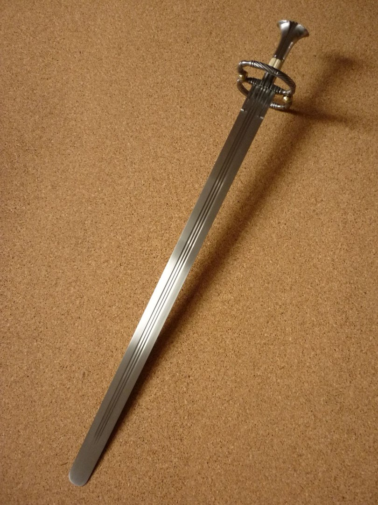
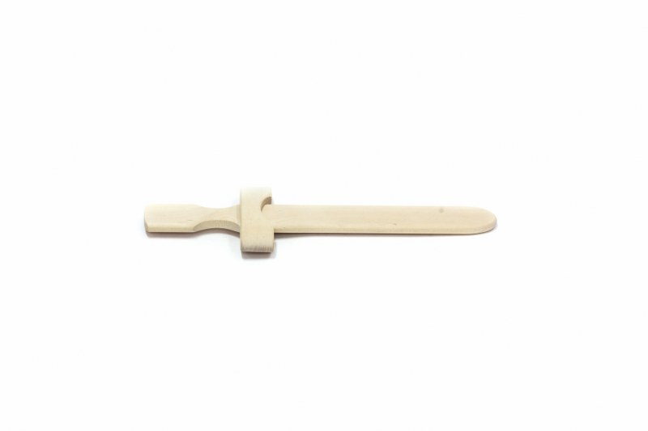
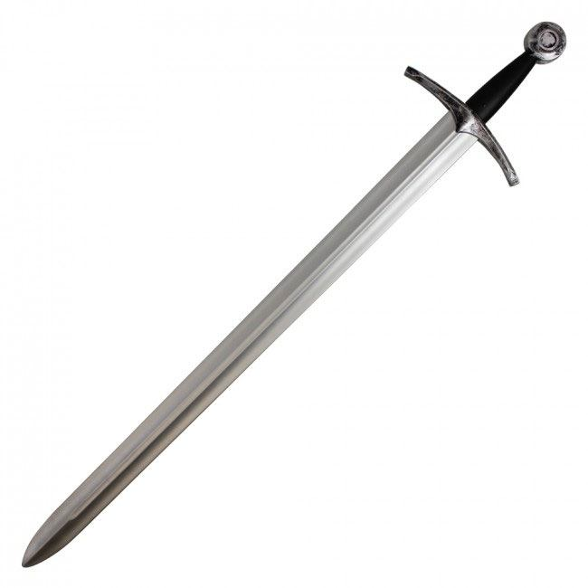

Kalavijas - vertimai, sinonimai, gramatika, statistika - dictionaries24.com
2020.10.29 10:31
Nav Dictionaries24 .com D 24 Nemokamas žodynas Žodžių sąrašas Apie žodyną Nuorodos EN ES DE FR IT PT NL RU NO SE FI DK CZ PL HU TR GR UK AL BG BY EE HR IS LV MK RO SI SK Nemokamas žodynas Žodžių sąrašas Kalavijas
Žodis: kalavijas
Susiję žodžiai: kalavijas
kalavijas kardas, kalavijas kovinis, kalavijas kaina, kalavijas angliskai, kalavijas serialas, kalavijas ir kryzius, kalavijas filmas, liepsnojantis kalavijas, skitu kalavijas, kalavijas reiksmeSinonimai : kalavijas
kardas, kalavijas, špaga, kavaleristas, fechtavimasis kardais, karinė galiaVertimai : kalavijas
Žodynas anglų Vertimai blade, sword, brand, steel kalavijas angliškaiŽodynas ispanų Vertimai acero, filo, cuño, señalar, hoja, ... kalavijas ispaniškai
Žodynas vokiečių Vertimai schaufel, schwert, lamelle, brandzeichen, kufe, ... kalavijas vokiškai
Žodynas prancūzų Vertimai pelle, lame, type, acier, repère, ... kalavijas prancūziškai
Žodynas italų Vertimai bollare, lama, acciaio, marchio, spada kalavijas itališkai
Žodynas portugalų Vertimai caldeira, espada, lâmina, aço, suíça kalavijas portugališkai
Žodynas olandų Vertimai mesje, zwaard, degen, staal, brandmerk, ... kalavijas olandiškai
Žodynas rusų Vertimai качество, закалять, стальной), булатный, заклеймить, ... kalavijas rusiškai
Žodynas norvegų Vertimai kårde, klinge, blad, sverd, merke, ... kalavijas norvegiškai
Žodynas švedų Vertimai märke, brännmärka, svärd kalavijas švediškai
Žodynas suomių Vertimai miekka, karaista, kekäle, leima, terä, ... kalavijas suomiškai
Žodynas danų Vertimai klinge, stål, mærke, sværd kalavijas daniškai
Žodynas čekų Vertimai značka, ostří, cejch, cejchovat, čepel, ... kalavijas čekiškai
Žodynas lenkų Vertimai chwat, ożóg, stal, gatunek, źdźbło, ... kalavijas lenkiškai
Žodynas vengrų Vertimai acél, penge, üszök, kard kalavijas vengriškai
Žodynas turkų Vertimai marka, çelik, kılıç kalavijas turkiškai
Žodynas graikų Vertimai σπαθί, λεπίδα, σπάθα, ατσάλι, ξίφος, ... kalavijas graikiškai
Žodynas ukrainiečių Vertimai сталь, шабля, билина, рапіра, смолоскип, ... kalavijas ukrainietiškai
Žodynas albanų Vertimai shpatë kalavijas albaniškai
Žodynas bulgarų Vertimai стомана, меч, клеймо kalavijas bulgariškai
Žodynas baltarusių Vertimai сталь kalavijas baltarusiškai
Žodynas estų Vertimai mõõk, abaluu, põletusmärk, tukk, tootemark kalavijas estiškai
Žodynas kroatų Vertimai marka, oštrica, žigosati, čeličnog, vrsta, ... kalavijas kroatiškai
Žodynas islandų Vertimai stál kalavijas islandiškai
Žodynas lotynų Vertimai ensis, chalybs, gladius, ferrum kalavijas lotyniškai
Žodynas latvių Vertimai modelis, šķirne, asmens, tērauds, zobens, ... kalavijas latviškai
Žodynas makedonų Vertimai челикот kalavijas makedoniškai
Žodynas rumunų Vertimai oţel, spadă, lamă, marcă kalavijas rumuniškai
Žodynas slovėnų Vertimai označit, meč, jeklo, čepel kalavijas slovėniškai
Žodynas slovakų Vertimai kord, oceľ, meč, m, dýka, ... kalavijas slovakiškai
Populiarumo statistika: kalavijas
Atsitiktiniai žodžiai
kalakutas gramatika kalba sinonimai tikėtis sinonimai eufemizmas gramatika tarnyba vertėjas vertimai normalus gramatika garsus smaragdas kareivis chemikas sinonimai gyvulys priekinis angliškai įeiti angliškai varna angliškai apdaras angliškai rūpestingumas angliškai kilmininkas angliškai edukologija angliškai palapinė angliškaiDictionaries24.com - Išbandykite mūsų žodyną ir pamatykite kaip paprasta juo naudotis.
- Kalavijas - vertimas - Lietuvių-Anglų Žodynas - Glosbe
- Vyksta tarptautinės SOP pratybos „Liepsnojantis kalavijas ...
- kalavijas - lithuanian_language.enacademic.com
- kalavijas - išsamiai DELFI.lt
- Kalavijas - vertimai, sinonimai, gramatika, statistika ...
- Likimo kalavijas - Andrzej Sapkowski | VAGA
- Liepsnojantis kalavijas. Legenda - Lietuvos kariuomenė
- Daumanto kalavijas - Pagrindinis
- Kalavijas (schiavona) | Nacionalinis muziejus Lietuvos ...
- Sapkowski, Andrzej – Likimo kalavijas (FKB 1) – Mainyk ...
- Kalavijas - vertimas - Lietuvių-Anglų Žodynas - Glosbe
Jei aš kalavijas, tai nukaltas iš stiklo. Nes pradedu aižėti… Viena, ką Mara Barou tikrai žino – ji yra kitokia. Maros kraujas raudonas kaip prasčiokų, bet ji turi gebėjimų, būdingų kilmingiesiems sidabriniams: gali valdyti žaibą.
- Vyksta tarptautinės SOP pratybos „Liepsnojantis kalavijas ...
kalavìjas sm. (2) 1. SD41,147, MŽ, R, KlG2, [K], J.Jabl, M, NdŽ plieninis, ilgas, siauras, aštriais ašmenimis kertamasis ginklas, kardas: Žemaitis už ...
- kalavijas - lithuanian_language.enacademic.com
Kalavijas bulgariškai. Vertimas - Žodynas: dictionaries24.com. Kalbų žodynas: lietuvių » bulgarų
- kalavijas - išsamiai DELFI.lt
Kalavijas (schiavona) Venetas, Italija XVII a. I p. Geležis, oda, medis; drožyba, kalstymas Ilgis 106 cm Inv. Nr. VR-365 Eksponatą 2008 m. rugsėjo 20 d. iš Riccardo Mannino (Merkatalė in Val di Peza, Italija) būsimam Valdovų rūmų muziejui įsigijo Lietuvos dailės muziejus. 2009 m. gegužės 27 d. jis perduotas Nacionaliniam muziejui Lietuvos Didžiosios Kunigaikštystės valdovų ...
- Kalavijas - vertimai, sinonimai, gramatika, statistika ...
Likimo kalavijas . Maginės fantastikos knygų ciklo „Raganius“ autorius Andrzej Sapkowski gimė Lenkijoje 1948 m. Išgarsėjęs dar pirmu apsakymu „Raganius“, jis parašė apie raganių Geraltą tris apsakymų rinkinius ir penkis romanus, jie išversti į daugelį kalbų. 2007 m. pagal „Raganiaus“ ciklą sukurtas kompiuterinis žaidimas „The Witcher“ irgi sulaukė pasaulinės ...
- Likimo kalavijas - Andrzej Sapkowski | VAGA
Taip prieštarų sandūroje gimstantis, vertybėmis išgaląstas mąstymas ir matymas - liepsnojantis Cherubinas, mūsų kariuomenės strategijos ir lyderystės kalavijas - taps viena stipriausių, mano gyvenimui kryptį suteikiančių, jėgų, kurias užtvirtins galutinė plieno ornamentika: Trispalvė Lietuvos Ugnis.
- Liepsnojantis kalavijas. Legenda - Lietuvos kariuomenė
Kalavijas vertimo žodynas lietuvių - anglų Glosbe, žodynas, nemokamai. Peržiūrėti milions žodžius ir frazes visomis kalbomis.
- Daumanto kalavijas - Pagrindinis
Vakarų pasaulyje kalavijas vaizduojamas kaip arkangelo Mykolo ginklas. Jis taip pat yra karaliaus Dovydo ir Juditos bei Juditos, kuri kalaviju nukirto galvą Holofernui, atributas. Evangelijoje pagal Joną iš Kristaus burnos išlenda kalavijas (1, 16) kaip simbolis nenugalimos jėgos ir dangiškosios teisybės, kaip žaibas perskrodžiančios ...
- Kalavijas (schiavona) | Nacionalinis muziejus Lietuvos ...
Žodis kalavijas angliškai verčiamas - sword. Lietuvių anglų žodynas. Anglų - Lietuvių; Lietuvių - Anglų; Išversti. Žodžių indeksas: a ...
- Sapkowski, Andrzej – Likimo kalavijas (FKB 1) – Mainyk ...
Labai tikroviškas kalavijasDydis: 80 cmDerinkite su riterio karnavalo kostiumu. Puikiais tiks ir Žiedų valdovo tematikai.Nepamirškite dirbtino kraujo ir riterio vertybių, taip pat pasitreniruokite, kaip nudobti drakoną
Jei aš kalavijas, tai nukaltas iš stiklo. Nes pradedu aižėti… Viena, ką Mara Barou tikrai žino – ji yra kitokia. Maros kraujas raudonas kaip prasčiokų, bet ji turi gebėjimų, būdingų kilmingiesiems sidabriniams: gali valdyti žaibą.
kalavìjas sm. (2) 1. SD41,147, MŽ, R, KlG2, [K], J.Jabl, M, NdŽ plieninis, ilgas, siauras, aštriais ašmenimis kertamasis ginklas, kardas: Žemaitis už ...
Kalavijas bulgariškai. Vertimas - Žodynas: dictionaries24.com. Kalbų žodynas: lietuvių » bulgarų
Kalavijas (schiavona) Venetas, Italija XVII a. I p. Geležis, oda, medis; drožyba, kalstymas Ilgis 106 cm Inv. Nr. VR-365 Eksponatą 2008 m. rugsėjo 20 d. iš Riccardo Mannino (Merkatalė in Val di Peza, Italija) būsimam Valdovų rūmų muziejui įsigijo Lietuvos dailės muziejus. 2009 m. gegužės 27 d. jis perduotas Nacionaliniam muziejui Lietuvos Didžiosios Kunigaikštystės valdovų ...
Likimo kalavijas . Maginės fantastikos knygų ciklo „Raganius“ autorius Andrzej Sapkowski gimė Lenkijoje 1948 m. Išgarsėjęs dar pirmu apsakymu „Raganius“, jis parašė apie raganių Geraltą tris apsakymų rinkinius ir penkis romanus, jie išversti į daugelį kalbų. 2007 m. pagal „Raganiaus“ ciklą sukurtas kompiuterinis žaidimas „The Witcher“ irgi sulaukė pasaulinės ...
Taip prieštarų sandūroje gimstantis, vertybėmis išgaląstas mąstymas ir matymas - liepsnojantis Cherubinas, mūsų kariuomenės strategijos ir lyderystės kalavijas - taps viena stipriausių, mano gyvenimui kryptį suteikiančių, jėgų, kurias užtvirtins galutinė plieno ornamentika: Trispalvė Lietuvos Ugnis.
Kalavijas vertimo žodynas lietuvių - anglų Glosbe, žodynas, nemokamai. Peržiūrėti milions žodžius ir frazes visomis kalbomis.
Vakarų pasaulyje kalavijas vaizduojamas kaip arkangelo Mykolo ginklas. Jis taip pat yra karaliaus Dovydo ir Juditos bei Juditos, kuri kalaviju nukirto galvą Holofernui, atributas. Evangelijoje pagal Joną iš Kristaus burnos išlenda kalavijas (1, 16) kaip simbolis nenugalimos jėgos ir dangiškosios teisybės, kaip žaibas perskrodžiančios ...
Žodis kalavijas angliškai verčiamas - sword. Lietuvių anglų žodynas. Anglų - Lietuvių; Lietuvių - Anglų; Išversti. Žodžių indeksas: a ...
Labai tikroviškas kalavijasDydis: 80 cmDerinkite su riterio karnavalo kostiumu. Puikiais tiks ir Žiedų valdovo tematikai.Nepamirškite dirbtino kraujo ir riterio vertybių, taip pat pasitreniruokite, kaip nudobti drakoną
  